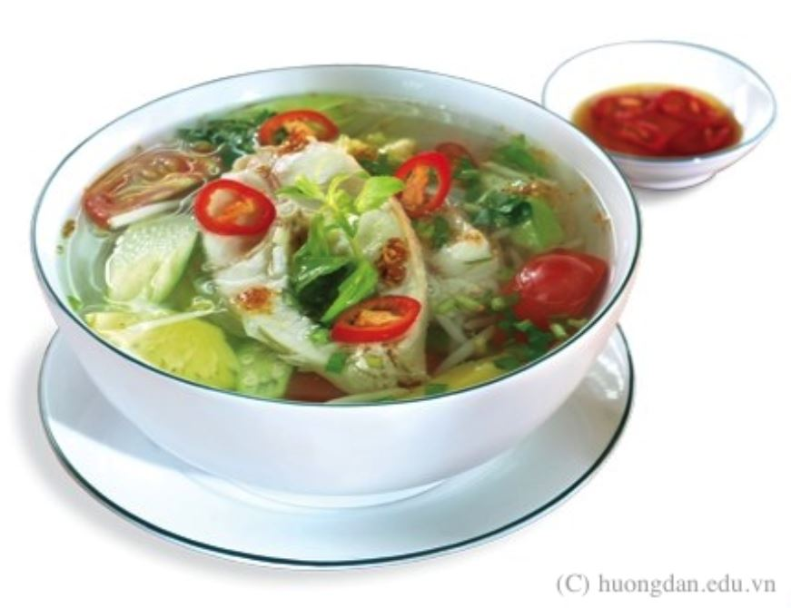

Canh chua cá lóc
- Khẩu phần: 4 người
- Thời gian chuẩn bị: 25 phút
- Thời gian nấu: 20 phút
- Giá thành: 100.000 đồng
Nguyên liệu
- Cá lóc: 1 con khoảng 700-800g.
- Thơm: ¼ quả.
- Cà chua: 2 quả.
- Đậu bắp: 5 quả.
- Dọc mùng: 2 nhánh.
- Giá đậu: 100g.
- Me chua chín: 50g.
- Rau thơm nấu canh chua gồm: hành lá, rau ngổ.
- Gia vị: hành khô, tỏi, muối, hạt nêm, bột ngọt, đường, nước mắm, dầu ăn.
Thực hiện
- Sơ chế nguyên liệu:
- Hành khô, tỏi: làm sạch, băm nhuyễn.
- Cá lóc: làm sạch, thái lát vừa ăn, cứa nhẹ trên mỗi lát để cá thấm gia vị. Ướp cá với ½ thìa hành tỏi băm nhuyễn, 1 thìa hạt nêm, ½ thìa nước mắm, ½ thìa bột ngọt, ½ thìa dầu ăn, ½ thìa tiêu để khoảng 15-20 phút.
- Khóm, đậu bắp: làm sạch, cắt lát xéo dài.
- Cà chua: bổ cau.
- Bạc hà: tước vỏ, cắt mỏng, bóp qua với một chút muối, rửa sạch, chần nhẹ với nước sôi, để ráo.
- Giá đậu: rửa sạch, để riêng.
- Rau thơm: rửa sạch, thái mịn.
- Me chua chín: ngâm với nước ấm, bỏ hạt.
- Thực hiện nấu:
- Phi thơm hành tỏi băm nhuyễn với dầu ăn.
- Cho cá vào đảo nhẹ rồi cho nước vào nấu canh, cho thêm nước me chua và thơm vào (có thể cho thêm nước xương hầm để canh thêm ngọt).
- Đến khi nước sôi, dùng thìa lớn vớt hết bọt phía trên để nước canh được trong.
- Nước sôi khoảng 3 phút, cá sắp chín tới, cho cà chua, đậu bắp, dọc mùng, giá đậu vào.
- Nêm thêm ¼ thìa muối, ½ thìa đường, 1 thìa hạt nêm, ½ thìa bột ngọt sao cho vừa ăn.
- Khi thấy món canh đã chín tới, tắt bếp, cho rau thơm vào.
Đây là công thức nấu món canh chua do cụ Google tổng hợp từ nhiều năm kinh nghiệm. Công thức nấu đã được kiểm nghiệm và yêu thích bởi nhiều người. Chúc các bạn chế biến thành công và ăn ngon miệng.
Phản hồi của người dùng
Q: Cám ơn tác giả, món ăn ngon quá nhưng em nấu theo không được! ;)
A: Chúcmừng em!
Q: Tác giả ơi, bạc hà là loại rau cải gì thế?
A: Bạc hà là một loại rau có hình dạng giống cây khoai môn, ở miền Bắc gọi là dọc mùng.
Liên kết
Tìm kiếm các cách nấu canh chua khácVề trang chủ
Q: Thế nào là “bổ cau”?
-Emily.A: Là bổ ra giống như bổ trái cau: bổ trái cà theo chiều từ trên cuống xuống làm 4, 6 hay 8 phần tùy kích thước quả cà và ý thích.